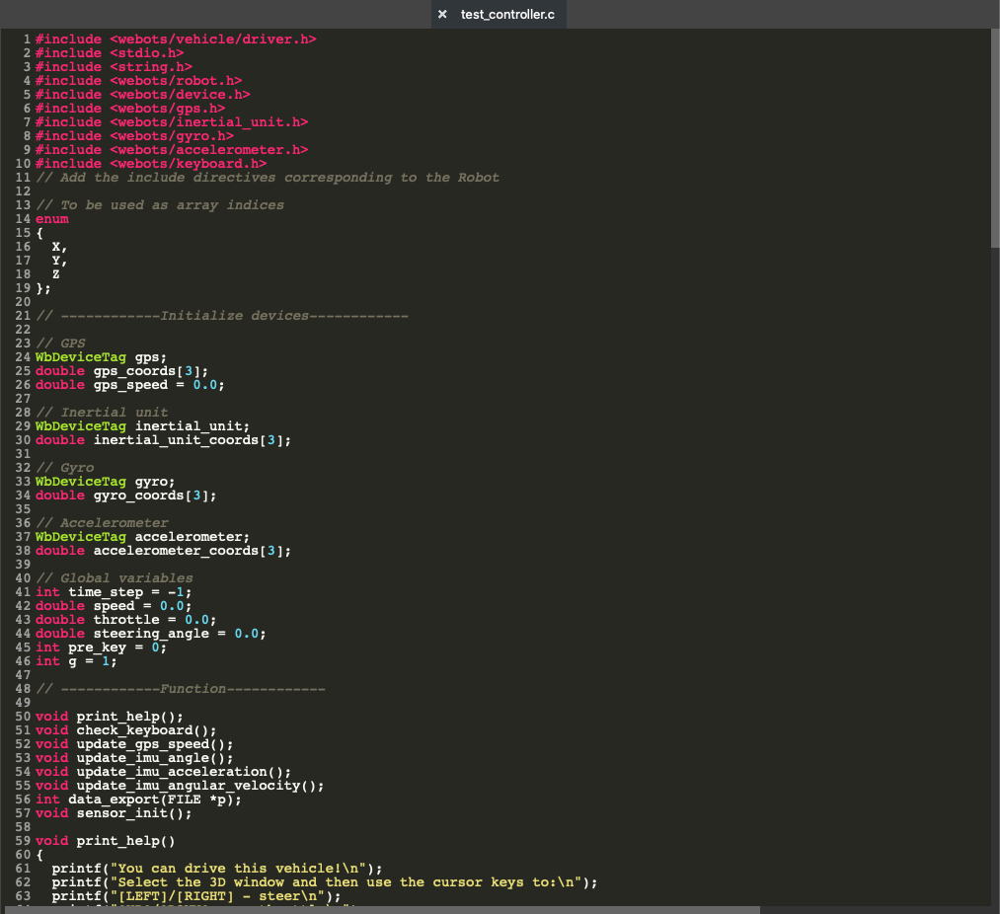

A controller is a program that defines the behavior of a robot. Webots controllers can be written in the following programming languages: C, C++, Java, Python, MATLAB, ROS, etc. In this tutorial, we are going to use C as a reference language.
This section describes functions used in the controller of Kubota and McCormick.
The driver library provides all the usual functionalities available to a human driving his own car.All the functions included in our controller are explained below.For more detailed about functions in driver library, please refer to Driver LIB
wbu_driver_init Initialise a driver, it should be called at the very beginning of any controller program.wbu_driver_cleanup Clean a driver stepwbu_driver_step step function should be called in the main loop to run one simulation step.wbu_driver_set_brake_intensity This function brakes the car by increasing the dampingConstant coefficient of the rotational joints of each of the four wheels. The argument should be between 0.0 and 1.0, 0 means that no damping constant is added on the joints (no breaking), 1 means that the parameter brakeCoefficient of the Car PROTO is applied on the dampingConstant of each joint (the value will be linearly interpolated between 0 and brakeCoefficient for any arguments between 0 and 1.wbu_driver_set_throttle This function is used in order to control the car in torque, it sets the state of the throttle.
The argument should be between 0.0 and 1.0, 0 means that 0% of the output torque of the engine is sent to the wheels and 1.0 means that 100% of the output torque of the engine is sent to the wheels.
For more information about how the output torque of the engine is computed see section Engine models.wbu_driver_set_gear This function sets the engaged gear.
An argument of -1 is used in order to engage the reverse gear, an argument of 0 is used in order to disengaged the gearbox.
Any other arguments than 0 and -1 should be between 1 and the number of coefficients set in the gearRatio parameter of the Car PROTO.The Keyboard is a set of functions available by default for each Robot node to read the keyboard input. It is therefore not a device and the functions do not require any WbDeviceTag. For more detailed about functions in driver library, please refer to Keyboard
wb_keyboard_enable Enable keyboard input by calling this function.wb_keyboard_disable Stop the keyboard reading.wb_keyboard_get_sampling_period Sampling_period is expressed in milliseconds, and defines how frequently readings are updated, this function will get the sampling_period.wb_keyboard_get_key Values can be read by calling this function repeatedly untill this function returns -1.The InertialUnit node simulates an Inertial Measurement Unit (IMU). The InertialUnit computes and returns its roll, pitch and yaw angles with respect to a global coordinate system defined in the WorldInfo node.
wb_inertial_unit_enable Turns on the angle measurements.wb_inertial_unit_get_roll_pitch_yaw Returns the current roll, pitch and yaw angles of the InertialUnit. The values are returned as an array of 3 components therefore only the indices 0, 1, and 2 are valid for accessing the returned array.
Note that the indices 0, 1 and 2 return the roll, pitch and yaw angles respectively.Note
The roll angle indicates the unit's rotation angle about its x-axis, in the interval [-π,π]. The roll angle is zero when the InertialUnit is horizontal, i.e., when its y-axis has the opposite direction of the gravity (WorldInfo defines the
gravityvector).
The pitch angle indicates the unit's rotation angle about is z-axis, in the interval [-π/2,π/2]. The pitch angle is zero when the InertialUnit is horizontal, i.e., when its y-axis has the opposite direction of the gravity. If the InertialUnit is placed on the Robot with a standard orientation, then the pitch angle is negative when the Robot is going down, and positive when the robot is going up.
The yaw angle indicates the unit orientation, in the interval [-π,π], with respect to WorldInfo.
northDirection. The yaw angle is zero when the InertialUnit's x-axis is aligned with the north direction, it is π/2 when the unit is heading east, and -π/2 when the unit is oriented towards the west. The yaw angle can be used as a compass.
[C, C++]: The returned vector is a pointer to internal values managed by the Webots, therefore it is illegal to free this pointer. Furthermore, note that the pointed values are only valid until the next call to the
wb_robot_steporRobot::stepfunctions. If these values are needed for a longer period they must be copied.
The Accelerometer node can be used to model accelerometer devices such as those commonly found in mobile electronics, robots and game input devices. The Accelerometer node measures acceleration and gravity induced reaction forces over 1, 2 or 3 axes. It can be used for example to detect fall, the up/down direction, etc.
wb_accelerometer_enable Allows the user to enable the acceleration measurements.wb_accelerometer_get_values Returns the current values measured by the Accelerometer. These values are returned as a 3D-vector, therefore only the indices 0, 1, and 2 are valid for accessing the vector. Each element of the vector represents the acceleration along the corresponding axis of the Accelerometer node, expressed in meters per second squared [m/s^2].
The first element corresponds to the x-axis, the second element to the y-axis, etc.Note [C, C++]: The returned vector is a pointer to the internal values managed by the Accelerometer node, therefore it is illegal to free this pointer. Furthermore, note that the pointed values are only valid until the next call to the
wb_robot_steporRobot::stepfunctions. If these values are needed for a longer period they must be copied.
The GPS node is used to model a Global Positioning Sensor (GPS) which can obtain information about its absolute position from the controller program.
wb_gps_enable Allows the user to enable GPS measurements.wb_gps_get_values Returns the current GPS measurement.
The values are returned as a 3D-vector, therefore only the indices 0, 1, and 2 are valid for accessing the vector.
The returned vector indicates the absolute position of the GPS device. This position can either be expressed in the cartesian coordinate system of Webots or using latitude-longitude-altitude, depending on the value of the gpsCoordinateSystem field of the WorldInfo node.Note [C, C++]: The returned vector is a pointer to the internal values managed by the GPS node, therefore it is illegal to free this pointer. Furthermore, note that the pointed values are only valid until the next call to the
wb_robot_steporRobot::stepfunctions. If these values are needed for a longer period they must be copied.
The Robot node can be used as basis for building a robot, e.g., an articulated robot, a humanoid robot, a wheeled robot.
Note: Logically, if the Robot node has one or more Solid (or derived) ancestor nodes, then the physical properties of the ancestor nodes will affect the Robot node's physical behavior.
wb_robot_get_device Returns a unique identifier for a device corresponding to a specified name.
For example, if a robot contains a DistanceSensor node whose name field is "ds1", the function will return the unique identifier of that device.
This WbDeviceTag identifier will be used subsequently for enabling, sending commands to, or reading data from this device.
If the specified device is not found, the function returns 0.
wb_robot_get_basic_time_step Returns the value of the basicTimeStep field of the WorldInfo node
print_help Print the help info.void print_help()
{
printf("You can drive this vehicle!\n");
printf("Select the 3D window and then use the cursor keys to:\n");
printf("[LEFT]/[RIGHT] - steer\n");
printf("[UP]/[DOWN] - throttle\n");
printf("[1]-[6] - change the gear ratio\n");
printf("[S] - see the speed of the car\n");
printf("The gear ratio right now is: %d\n", g);
}
check_keyboard Get user inputvoid check_keyboard()
{
if (pre_key == 0)
{
int key = wb_keyboard_get_key();
pre_key = key > 0 ? key : 0;
}
else
{
int pre_key_state = wb_keyboard_get_key();
if (pre_key_state != pre_key)
{
switch (pre_key)
{
case ' ':
wbu_driver_set_throttle(0);
wbu_driver_set_brake_intensity(1);
break;
case WB_KEYBOARD_UP:
wbu_driver_set_brake_intensity(0);
throttle += 0.1;
throttle = (throttle > 1) ? 1 : throttle;
wbu_driver_set_throttle(throttle);
printf("throttle: %.2f\n", throttle);
break;
case WB_KEYBOARD_DOWN:
wbu_driver_set_brake_intensity(0);
throttle -= 0.1;
throttle = (throttle < 0) ? 0 : throttle;
wbu_driver_set_throttle(throttle);
printf("throttle: %.2f\n", throttle);
break;
case WB_KEYBOARD_RIGHT:
wbu_driver_set_brake_intensity(0);
steering_angle += 0.05;
steering_angle = (steering_angle > 0.45) ? 0.45 : steering_angle;
wbu_driver_set_steering_angle(steering_angle);
printf("Steering: %.2f / 9\n", steering_angle * 20);
break;
case WB_KEYBOARD_LEFT:
wbu_driver_set_brake_intensity(0);
steering_angle -= 0.05;
steering_angle = (steering_angle < -0.45) ? -0.45 : steering_angle;
wbu_driver_set_steering_angle(steering_angle);
printf("Steering: %.2f / 9\n", steering_angle * 20);
break;
case '0':
g = -1;
printf("The gear ratio right now is: %d\n", g);
wbu_driver_set_gear(g);
break;
case '1':
g = 1;
printf("The gear ratio right now is: %d\n", g);
wbu_driver_set_gear(g);
break;
case '2':
g = 2;
printf("The gear ratio right now is: %d\n", g);
wbu_driver_set_gear(g);
break;
case '3':
g = 3;
printf("The gear ratio right now is: %d\n", g);
wbu_driver_set_gear(g);
break;
case '4':
g = 4;
printf("The gear ratio right now is: %d\n", g);
wbu_driver_set_gear(g);
break;
case '5':
g = 5;
printf("The gear ratio right now is: %d\n", g);
wbu_driver_set_gear(g);
break;
case '6':
g = 6;
printf("The gear ratio right now is: %d\n", g);
wbu_driver_set_gear(g);
break;
case 'S':
printf("The gps speed of the car: %.2f\n", gps_speed);
break;
}
}
pre_key = pre_key_state;
}
}
update_gps_speed Update the gps speedvoid update_gps_speed()
{
const double *coords = wb_gps_get_values(gps);
double vel[3] = {coords[X] - gps_coords[X], coords[Y] - gps_coords[Y], coords[Z] - gps_coords[Z]};
double dist = sqrt(vel[X] * vel[X] + vel[Y] * vel[Y] + vel[Z] * vel[Z]);
gps_speed = dist / time_step * 3600.0;
memcpy(gps_coords, coords, sizeof(gps_coords));
}
update_imu_angle Update the imu anglevoid update_imu_angle()
{
const double *coords = wb_inertial_unit_get_roll_pitch_yaw(inertial_unit);
memcpy(inertial_unit_coords, coords, sizeof(inertial_unit_coords));
}
update_imu_acceleration Update the imu accelerationvoid update_imu_acceleration()
{
const double *coords = wb_accelerometer_get_values(accelerometer);
memcpy(accelerometer_coords, coords, sizeof(accelerometer_coords));
}
update_imu_angular_velocity Update the angular velocityvoid update_imu_angular_velocity()
{
const double *coords = wb_gyro_get_values(gyro);
memcpy(gyro_coords, coords, sizeof(gyro_coords));
}
data_export Export data to fileint data_export(FILE *p)
{
if (p == NULL)
{
printf("open error!\n");
return -1;
}
else
{
update_gps_speed();
update_imu_angle();
update_imu_acceleration();
update_imu_angular_velocity();
fprintf(p, "%.3f,%.3f,%.3f,%.3f,%.3f,%.3f,%.3f,%.3f,%.3f,%.3f,%.3f,%.3f\n",
gps_coords[X], gps_coords[Y], gps_coords[Z],
inertial_unit_coords[X], inertial_unit_coords[Y], inertial_unit_coords[Z],
accelerometer_coords[X], accelerometer_coords[Y], accelerometer_coords[Z],
gyro_coords[X], gyro_coords[Y], gyro_coords[Z]);
return 0;
}
}
sensor_init Initialize sensorsvoid sensor_init()
{
// initialize inertial unit
inertial_unit = wb_robot_get_device("inertial unit");
wb_inertial_unit_enable(inertial_unit, time_step);
// initialize accelerometer
accelerometer = wb_robot_get_device("accelerometer");
wb_accelerometer_enable(accelerometer, time_step);
// initialize gyro
gyro = wb_robot_get_device("gyro");
wb_gyro_enable(gyro, time_step);
// initialize gps
gps = wb_robot_get_device("gps");
wb_gps_enable(gps, time_step);
}